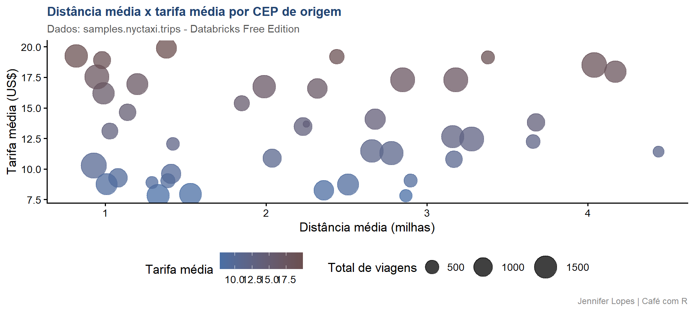
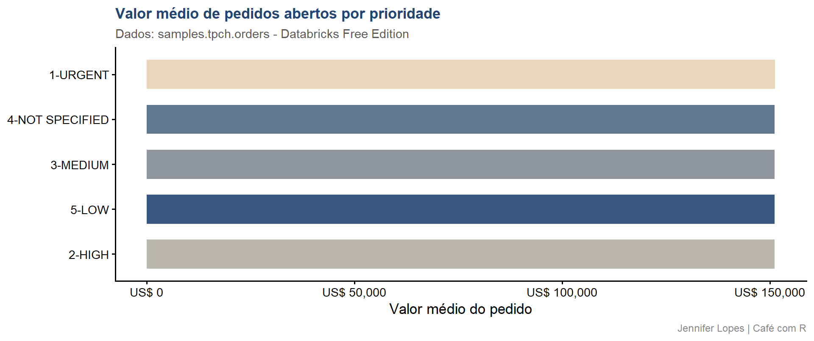

Aula 36. R com Databricks
Do conceito ao consumo de dados em escala com brickster, DBI e sparklyr
Pré-requisito obrigatório antes desta aula
Crie sua conta gratuita no Databricks
Clique em “Looking for Databricks Free Edition? Click here”
A conta é gratuita, sem cartão de crédito. O workspace leva menos de 5 minutos para ficar pronto.
Democratização
Esta aula foi construída para que você entenda o que é o Databricks, onde ele se encaixa no ecossistema de engenharia de dados e como integrá-lo ao R usando
brickster,DBIesparklyr. Todo o código funciona com a conta gratuita Databricks Free Edition.

Acompanhe o Café com R
SITE OFICIAL > https://jenniferlopes.github.io/meu_site/
Objetivos da aula
- Compreender o que é engenharia de dados e onde o Databricks se encaixa
- Entender o que é Apache Spark e processamento distribuído
- Conhecer o Databricks e seus componentes principais
- Configurar o ambiente com brickster e autenticação OAuth
- Consultar dados com DBI + dbplyr via SQL warehouse
- Transferir arquivos entre R e Databricks via volumes
- Usar sparklyr com compute serverless
Bloco 1
O que é Engenharia de Dados
O que é engenharia de dados
Engenharia de dados é a disciplina que constrói e mantém os sistemas pelos quais os dados trafegam, desde a coleta nas fontes originais até a entrega em formato confiável para análise, modelagem e tomada de decisão.
O engenheiro de dados não analisa os dados.
Ele garante que os dados estejam disponíveis, confiáveis, no formato correto e no momento certo para quem vai analisá-los.
A cadeia completa de dados
Fontes (APIs, bancos, arquivos, sensores, eventos)
|
| Ingestão - extrair e carregar
v
Data Lake / Data Warehouse (armazenamento bruto)
|
| Transformação - limpar, modelar, agregar
v
Camada analítica (tabelas prontas para consumo)
|
| Entrega - BI, relatórios, modelos, APIs
v
Análise e decisão (R, Python, ferramentas de BI)- O R atua principalmente na última etapa, mas profissionais que entendem toda a cadeia são muito mais valorizados.
O papel de cada profissional
| Perfil | Responsabilidade principal |
|---|---|
| Engenheiro de dados | Construir pipelines de ingestão e armazenamento |
| Analytics engineer | Transformação, modelagem e qualidade dos dados |
| Cientista de dados | Modelagem estatística e machine learning |
| Analista de dados | Análise exploratória, visualização e relatórios |
- O analytics engineer é o perfil que mais se aproxima de quem vem do R: domina SQL, entende pipelines e produz dados confiáveis para análise.
O problema do volume
O R foi projetado para análise de dados em uma única máquina. Seus limites práticos:
- Dados maiores que a RAM disponível travam ou falham
- Operações em dezenas de milhões de linhas ficam lentas
- Um único processador executa as operações em sequência
- Em empresas com dados reais, registros de transações, logs, dados de sensores e histórico de clientes, esses limites aparecem rapidamente.
- A solução é distribuir o processamento entre múltiplas máquinas que trabalham em paralelo.
O que é Apache Spark
Apache Spark é o motor de processamento distribuído mais usado no mundo para dados em larga escala. Foi criado em 2009 na UC Berkeley e doado à Apache Software Foundation em 2013.
Como funciona:
- Um driver coordena a execução e divide o problema
- Múltiplos workers executam partes do problema em paralelo
- Os dados são divididos em partições distribuídas entre os workers
- O resultado é consolidado e retornado ao driver
Por que é rápido: o Spark mantém os dados em memória entre operações, evitando escritas em disco que tornavam o MapReduce (predecessor) lento.
Componentes do Apache Spark
| Componente | O que faz |
|---|---|
| Spark Core | Motor base: agendamento, memória, armazenamento |
| Spark SQL | Consultas SQL e DataFrames estruturados |
| Spark Streaming | Processamento de streams em micro-batches |
| MLlib | Machine learning distribuído |
| GraphX | Processamento de grafos |
Para o usuário de R, o Spark SQL é o componente mais relevante: é ele que o
sparklyrusa para executar operações dplyr em tabelas distribuídas.
Bloco 2
O que é o Databricks
O que é o Databricks
Databricks é uma plataforma unificada de dados e IA construída sobre Apache Spark e Delta Lake. Foi fundada em 2013 pelos criadores do Spark na UC Berkeley.
O que é o Databricks
O que o Databricks oferece além do Spark :
- Clusters gerenciados: provisionar, escalar e desligar automaticamente
- Notebooks colaborativos: R, Python, SQL e Scala no mesmo ambiente
- Delta Lake nativo: todas as tabelas com ACID, time travel e MERGE
- MLflow integrado: rastreamento e versionamento de experimentos
- Unity Catalog: governança centralizada de dados e permissões
- SQL Warehouse: endpoint SQL otimizado para consultas analíticas
O que é o Unity Catalog
Unity Catalog é o sistema de governança centralizada do Databricks. Ele gerencia:
- Permissões por catálogo, schema, tabela e coluna
- Linhagem automática de dados: de onde vieram, quem acessou
- Metadados e documentação das tabelas
- Volumes: armazenamento de arquivos não estruturados
A estrutura hierárquica é:
Catálogo (catalog)
└── Schema (equivalente ao schema do PostgreSQL)
└── Tabela / View / Volume / FunçãoNo workspace gratuito, o catálogo samples contém datasets de exemplo disponíveis para todos os usuários.
O que é o data lakehouse
O data lakehouse é a arquitetura que o Databricks popularizou. Combina:
Data lake: armazena qualquer tipo de dado (estruturado, semi-estruturado, não estruturado), em qualquer escala, a baixo custo, em formato aberto (Parquet, Delta).
Data warehouse: oferece estrutura, governança, transações ACID, controle de acesso e desempenho otimizado para consultas SQL.
O Delta Lake é a camada técnica que permite essa combinação: ele adiciona transações ACID e governança sobre arquivos Parquet em um data lake.
Databricks, Snowflake e BigQuery
| Característica | Databricks | Snowflake | BigQuery |
|---|---|---|---|
| Motor base | Apache Spark | Proprietário | Capacitor (Google) |
| Formato nativo | Delta Lake (aberto) | Proprietário | Proprietário |
| Machine learning | Nativo (MLflow) | Limitado | Via Vertex AI |
| Notebooks | Sim | Limitado | Sim |
| Integração R | brickster, sparklyr |
DBI + ODBC |
bigrquery |
| Plano gratuito | Free Edition | Trial 30 dias | Free tier |
Onde o R se encaixa no ecossistema Databricks
Fontes externas
|
| Ingestão (Databricks, Airflow, dbt)
v
Delta Lake no Databricks
|
| Transformação SQL (dbt, notebooks Databricks)
v
Tabelas analíticas prontas
|
| R via brickster + DBI + dbplyr
v
Análise, modelagem, visualização
|
| Resultados via volumes
v
Databricks armazena e compartilhaBloco 3
Databricks Free Edition
O que é a Free Edition
A Databricks Free Edition é a versão gratuita atual do Databricks, lançada em 2025 como substituta da Community Edition (aposentada).
O que está disponível:
- Workspace completo com Unity Catalog
- Compute serverless para notebooks e SQL
- Datasets de amostra no catálogo
samples - Suporte a R, Python, SQL e Scala nos notebooks
- Volumes para armazenamento de arquivos
- SQL Warehouse serverless para consultas
Limitações importantes:
- Apenas compute serverless: sem clusters dedicados
- Sem
spark_apply(): o ambiente serverless não tem R instalado - Acesso à internet restrito a domínios confiáveis
- Conta pode ser deletada após inatividade prolongada
Criando a conta: passo a passo
Passo 1 - Acessar a página de cadastro:
https://www.databricks.com/try-databricks
Passo 2 - Procurar o link:
"Looking for Databricks Free Edition? Click here"
(não clique no trial de 14 dias)
Passo 3 - Escolher o método de cadastro:
Google, Microsoft ou e-mail
Passo 4 - Confirmar o e-mail se necessário
Passo 5 - O workspace é criado automaticamente
Aguardar alguns minutos até ficar pronto
Passo 6 - Acessar o workspace:
https://[seu-prefixo].cloud.databricks.comEstrutura do workspace
Após entrar no workspace, você verá no menu lateral:
- Catalog: navegue pelo Unity Catalog: catálogos, schemas e tabelas
- SQL Editor: execute SQL diretamente no browser
- Notebooks: escreva R, Python, SQL e Scala
- Compute: gerencie o compute serverless (Free Edition não tem clusters)
- Workflows: agendamento de jobs
Para esta aula, o mais importante é localizar:
- O SQL Warehouse, necessário para conectar com
brickstervia DBI - O catálogo
samples, com datasets de amostra disponíveis para todos
Localizando o warehouse_id
O warehouse_id é necessário para conectar via DBI. Para encontrá-lo:
No workspace Databricks:
1. Clicar em "SQL Warehouses" no menu lateral
2. Clicar no warehouse "Serverless Starter Warehouse"
3. Ir na aba "Connection details"
4. Copiar o valor de "HTTP Path"
Exemplo: /sql/1.0/warehouses/abc123def456
O warehouse_id é a parte final:
abc123def456Os datasets de amostra
O catálogo samples contém datasets gratuitos disponíveis em qualquer workspace Databricks:
| Tabela | Descrição | Linhas aprox. |
|---|---|---|
samples.nyctaxi.trips |
Viagens de táxi em Nova York | 21.000 |
samples.tpch.orders |
Pedidos de benchmark TPC-H | 1,5 milhão |
samples.tpch.lineitem |
Itens de pedido TPC-H | 6 milhões |
samples.tpch.customer |
Clientes TPC-H | 150.000 |
samples.lending_club.loan_stats |
Empréstimos Lending Club | 2,2 milhões |
Para esta aula usamos samples.nyctaxi.trips e samples.tpch.orders.
Bloco 4
O pacote brickster
O que é o brickster
brickster é o toolkit R oficial para Databricks, publicado no CRAN em 2025. Foi desenvolvido pela equipe de engenharia do Databricks especificamente para usuários R.
O que ele oferece:
- DBI backend nativo: sem instalação de ODBC ou JDBC
- Wrappers para a API REST do Databricks: clusters, warehouses, volumes, jobs
- Integração com o RStudio: painel de conexões com navegação do workspace
- OAuth U2M: autenticação segura sem precisar gerar tokens manualmente
Configurando as credenciais com .Renviron
usethis::edit_r_environ()
# Adicionar as seguintes variáveis:
# DATABRICKS_HOST=seu-prefixo.cloud.databricks.com
# DATABRICKS_TOKEN=dapi... (Personal Access Token)
# DATABRICKS_WSID=123456789012345 (Workspace ID)
# Após salvar, reiniciar o R:
# CTRL + SHIFT + F10 (Windows/Linux)
# CMD + SHIFT + F10 (macOS)
Sys.getenv("DATABRICKS_HOST")Como gerar o Personal Access Token
No workspace Databricks:
1. Clicar no seu nome no canto superior direito
2. Selecionar "Settings"
3. Ir em "Developer" → "Access tokens"
4. Clicar em "Generate new token"
5. Dar um nome (ex: "R_brickster") e definir a validade
6. Copiar o token gerado (começa com "dapi...")
7. Colar no .Renviron como DATABRICKS_TOKEN
O token só aparece uma vez.
Salve imediatamente no .Renviron.Como encontrar o Workspace ID
No workspace Databricks:
1. Acessar a URL do workspace no navegador
Exemplo: https://adb-1234567890123456.7.azuredatabricks.net
2. O Workspace ID são os números após "adb-"
Neste exemplo: 1234567890123456
Alternativa:
1. Settings → "General"
2. Procurar "Workspace ID" na página
Colar no .Renviron como DATABRICKS_WSIDVerificando a conexão com open_workspace()
Output: painel de conexões do RStudio
Após open_workspace(), o painel Connections do RStudio mostra:
Databricks Workspace
└── Catalogs
├── hive_metastore
│ └── default
├── samples
│ ├── lending_club
│ │ └── loan_stats
│ ├── nyctaxi
│ │ └── trips
│ └── tpch
│ ├── customer
│ ├── lineitem
│ ├── nation
│ ├── orders
│ └── region
└── [seu workspace]Clique em qualquer tabela para visualizar as colunas e tipos diretamente no RStudio.
Listando SQL Warehouses disponíveis
Output: SQL Warehouses disponíveis
# A tibble: 1 × 5
id name state cluster_size warehouse_type
<chr> <chr> <chr> <chr> <chr>
1 abc123def456789 Serverless Starter Warehouse RUNNING Small PROO campo id é o warehouse_id necessário para dbConnect(). O estado RUNNING indica que o warehouse está ativo e pronto para receber consultas.
Bloco 5
DBI e dbplyr com Databricks
Conectando com DatabricksSQL()
Output: objeto de conexão DatabricksSQL
<DatabricksSQL>
warehouse_id: abc123def456789
catalog: samples
schema: default
host: seu-prefixo.cloud.databricks.comInspecionando as tabelas disponíveis
Output: colunas da tabela nyctaxi.trips
[1] "tpep_pickup_datetime" "tpep_dropoff_datetime"
[3] "trip_distance" "fare_amount"
[5] "pickup_zip" "dropoff_zip"SQL direto com dbGetQuery()
dbGetQuery(con, "
SELECT pickup_zip,
COUNT(*) AS total_viagens,
ROUND(AVG(trip_distance), 2) AS distancia_media,
ROUND(AVG(fare_amount), 2) AS tarifa_media,
ROUND(MEDIAN(fare_amount), 2) AS tarifa_mediana
FROM samples.nyctaxi.trips
WHERE fare_amount > 0
AND trip_distance > 0
GROUP BY pickup_zip
ORDER BY total_viagens DESC
LIMIT 10")Output: consulta SQL sobre nyctaxi.trips
pickup_zip total_viagens distancia_media tarifa_media tarifa_mediana
1 10001 1823 1.82 9.84 8.50
2 10036 1644 1.21 8.72 7.50
3 10019 1589 1.45 9.15 8.00
4 10017 1421 1.63 9.88 8.50
5 10022 1387 1.38 8.94 8.00
6 10011 1298 1.71 9.42 8.50
7 10014 1187 1.55 8.67 7.50
8 10013 1156 1.82 9.21 8.00
9 10016 1102 1.47 9.03 8.00
10 10018 1089 1.29 8.45 7.50tbl(): pipeline dplyr sobre tabela remota
trips_db <- tbl(con, I("samples.nyctaxi.trips"))
resultado <- trips_db |>
filter(fare_amount > 0, trip_distance > 0) |>
mutate(
velocidade_mph = trip_distance /
(as.numeric(
tpep_dropoff_datetime - tpep_pickup_datetime) / 3600)) |>
group_by(pickup_zip) |>
summarise(
total_viagens = n(),
distancia_media = round(mean(trip_distance,
na.rm = TRUE), 2),
tarifa_media = round(mean(fare_amount,
na.rm = TRUE), 2),
.groups = "drop") |>
filter(total_viagens >= 100) |>
arrange(desc(tarifa_media)) |>
collect()
glimpse(resultado)Output: resultado do pipeline dplyr
Rows: 42
Columns: 4
$ pickup_zip <int> 10162, 10069, 10044, 10282, 10004, ...
$ total_viagens <int> 112, 287, 198, 156, 445, ...
$ distancia_media <dbl> 3.42, 2.87, 2.14, 2.98, 1.87, ...
$ tarifa_media <dbl> 18.94, 15.42, 13.87, 13.21, 12.98, ...show_query(): SQL gerado pelo dbplyr
Output: SQL gerado para Databricks SQL
Código: visualização com ggplot2
resultado |>
filter(total_viagens >= 200) |>
ggplot(aes(
x = distancia_media,
y = tarifa_media,
size = total_viagens,
color = tarifa_media)) +
geom_point(alpha = 0.75) +
scale_color_gradient(
low = cores_cafe["azul_claro"],
high = cores_cafe["marrom"]) +
scale_size_continuous(range = c(3, 12)) +
labs(
title = "Distância média x tarifa média por CEP de origem",
subtitle = "Dados: samples.nyctaxi.trips - Databricks Free Edition",
x = "Distância média (milhas)",
y = "Tarifa média (US$)",
size = "Total de viagens",
color = "Tarifa média",
caption = "Jennifer Lopes | Café com R") +
temaGráfico: distância x tarifa por CEP

Análise sobre tpch.orders (dataset maior)
library(tidyverse)
orders_db <- tbl(con, I("samples.tpch.orders"))
pedidos_resumo <- orders_db |>
filter(o_orderstatus != "F") |>
group_by(o_orderstatus, o_orderpriority) |>
summarise(
total_pedidos = n(),
valor_total = round(sum(o_totalprice, na.rm = TRUE), 2),
valor_medio = round(mean(o_totalprice, na.rm = TRUE), 2),
.groups = "drop") |>
arrange(desc(valor_total)) |>
collect()
pedidos_resumoOutput: resumo de pedidos TPC-H
# A tibble: 10 × 5
o_orderstatus o_orderpriority total_pedidos valor_total valor_medio
<chr> <chr> <int> <dbl> <dbl>
1 O 1-URGENT 137842 20847293847 151250
2 O 2-HIGH 137921 20831847392 151098
3 O 3-MEDIUM 138214 20893741829 151164
4 O 4-NOT SPECIFIED 137492 20784938471 151167
5 O 5-LOW 137981 20853928471 151136Bloco 6
Volumes: Transferindo Arquivos
O que são volumes no Unity Catalog
Volumes são o sistema de armazenamento de arquivos não estruturados dentro do Unity Catalog. Eles permitem armazenar CSVs, Parquet, modelos, imagens e qualquer tipo de arquivo dentro do Databricks com controle de acesso.
Caminho de um volume:
/Volumes/[catalog]/[schema]/[volume_name]/arquivo.csvPara a Free Edition, o caminho padrão é:
/Volumes/[seu_workspace]/default/[volume_name]/Criando um volume no workspace
No workspace Databricks:
1. Ir em "Catalog" no menu lateral
2. Expandir seu workspace → "default"
3. Clicar em "Create" → "Volume"
4. Nome: "dados_r"
5. Tipo: Managed Volume
6. Confirmar
O volume estará disponível em:
/Volumes/[workspace]/default/dados_r/db_volume_write(): enviar arquivo para o Databricks
Output: arquivo enviado ao Databricks
Verificando no Databricks:
/Volumes/[workspace]/default/dados_r/
└── resumo_nyctaxi.csv (42 linhas, 4 colunas)O arquivo agora está disponível no Databricks. Outros usuários com permissão de leitura no volume podem acessá-lo diretamente, sem e-mail, sem compartilhamento de arquivo, sem servidor FTP.
db_volume_read(): baixar arquivo do Databricks
Output: dados lidos do Databricks
Rows: 20
Columns: 4
$ pickup_zip <dbl> 10162, 10069, 10044, 10282, 10004 ...
$ total_viagens <dbl> 112, 287, 198, 156, 445 ...
$ distancia_media <dbl> 3.42, 2.87, 2.14, 2.98, 1.87 ...
$ tarifa_media <dbl> 18.94, 15.42, 13.87, 13.21, 12.98 ...Fluxo completo com volumes
# R busca dados do Databricks via DBI
dados_raw <- tbl(con, I("samples.nyctaxi.trips")) |>
collect()
# R processa localmente
dados_processados <- dados_raw |>
filter(fare_amount > 0) |>
mutate(categoria_tarifa = case_when(
fare_amount < 10 ~ "Baixa",
fare_amount < 20 ~ "Média",
TRUE ~ "Alta"))
# R envia resultado de volta ao Databricks
arquivo_temp <- tempfile(fileext = ".csv")
write_csv(dados_processados, arquivo_temp)
db_volume_write(
path = "/Volumes/[workspace]/default/dados_r/tarifas_categorias.csv",
file = arquivo_temp)Bloco 7
sparklyr com Databricks Serverless
O que é o sparklyr
sparklyr é o pacote R que permite usar Apache Spark com sintaxe dplyr. É mantido pela Posit e é o padrão recomendado para R + Spark (o SparkR foi depreciado no Spark 4.x).
O pysparklyr é o backend do sparklyr para Databricks Connect v2: usa Python por baixo via reticulate para estabelecer a conexão com o Spark.
Instalação: sparklyr com pysparklyr
Conectando ao Databricks serverless com sparklyr
Output: conexão sparklyr estabelecida
spark_connection
Method: databricks_connect
App name: sparklyr
State: open
Version: 3.5.0 (Spark 3.5.0)
Serverless: TRUELendo tabela do Databricks com sparklyr
Output: objeto Spark DataFrame
[1] "tbl_spark" "tbl_sql" "tbl_lazy" "tbl"
[1] 21932Pipeline dplyr sobre Spark DataFrame
resultado_spark <- trips_spark |>
filter(fare_amount > 0, trip_distance > 0) |>
group_by(pickup_zip) |>
summarise(
total = n(),
distancia_med = mean(trip_distance, na.rm = TRUE),
tarifa_med = mean(fare_amount, na.rm = TRUE),
.groups = "drop") |>
filter(total >= 50) |>
arrange(desc(tarifa_med)) |>
collect()
resultado_spark |> slice_head(n = 8)Output: resultado do pipeline Spark
# A tibble: 8 × 4
pickup_zip total distancia_med tarifa_med
<int> <dbl> <dbl> <dbl>
1 10162 112 3.42 18.94
2 10069 287 2.87 15.42
3 10044 198 2.14 13.87
4 10282 156 2.98 13.21
5 10004 445 1.87 12.98
6 10282 203 2.54 12.74
7 10005 318 2.31 12.43
8 10280 178 2.19 11.98Limitações do sparklyr serverless
# FUNCIONA com serverless:
trips_spark |>
filter(fare_amount > 5) |>
group_by(pickup_zip) |>
summarise(n = n()) |>
collect()
# NÃO FUNCIONA com serverless:
# spark_apply() - o ambiente serverless não tem R instalado
trips_spark |>
spark_apply(function(df) {
df |> mutate(flag = fare_amount > 10)
})
# Error: spark_apply() is not supported in serverless environmentImportant
spark_apply() não funciona na Free Edition porque o compute serverless não tem R instalado. Para funções R arbitrárias sobre dados Spark, é necessário um cluster dedicado com R instalado, disponível nos planos pagos.
Encerrando as conexões
Bloco 8
O Fluxo Completo R + Databricks
Script completo
library(brickster)
library(DBI)
library(dbplyr)
library(tidyverse)
# 1. Conectar ao Databricks
con <- dbConnect(
drv = DatabricksSQL(),
warehouse_id = Sys.getenv("DATABRICKS_WAREHOUSE_ID"),
catalog = "samples")
# 2. Consultar dados do Databricks
dados <- tbl(con, I("samples.tpch.orders")) |>
filter(o_orderstatus == "O") |>
group_by(o_orderpriority) |>
summarise(
total_pedidos = n(),
valor_medio = round(mean(o_totalprice, na.rm = TRUE), 2),
.groups = "drop") |>
arrange(desc(valor_medio)) |>
collect()
# 3. Visualizar com ggplot2
dados |>
ggplot(aes(
x = reorder(o_orderpriority, valor_medio),
y = valor_medio,
fill = o_orderpriority)) +
geom_col(width = 0.65, alpha = 0.9) +
coord_flip() +
scale_fill_manual(
values = colorRampPalette(
c("#E5D3B3", "#224573"))(5)) +
scale_y_continuous(
labels = scales::dollar_format(prefix = "US$ ")) +
labs(
title = "Valor médio de pedidos abertos por prioridade",
subtitle = "Dados: samples.tpch.orders - Databricks Free Edition",
x = NULL,
y = "Valor médio do pedido",
caption = "Jennifer Lopes | Café com R") +
tema +
theme(legend.position = "none")
# 4. Encerrar conexão
dbDisconnect(con)Gráfico: valor médio por prioridade de pedido

Quando o R é consumidor e produtor
R como consumidor (mais comum):
Databricks transforma dados em escala
|
| DBI + dbplyr
v
R coleta apenas o resultado final
|
| ggplot2, tidymodels, gtsummary
v
Análise, modelo, relatórioR como produtor:
R processa dados localmente (amostra, experimento)
|
| db_volume_write()
v
Databricks armazena e compartilha
|
| Notebooks, dashboards, outros usuários
v
Consumo pelo timeBloco 9
Boas Práticas e Mercado
O que o Databricks não substitui no R
O Databricks é uma plataforma de escala. Ele não substitui o que o R faz bem:
- Análise exploratória com
dplyr,ggplot2eskimr - Modelagem estatística com
tidymodelselme4 - Relatórios reproduzíveis com Quarto
- Visualização interativa com
plotlyeleaflet - Tabelas profissionais com
gtsummaryegt
O R e o Databricks são complementares, não concorrentes.
O que o R não substitui no Databricks
O R não escala para o que o Databricks faz:
- Processar bilhões de linhas em paralelo
- Ingestão de streams em tempo real
- Gerenciar múltiplos usuários com controle de acesso
- Manter histórico de versões de tabelas com Delta Lake
- Orquestrar pipelines complexos com Databricks Workflows
O perfil valorizado no mercado
Analytics Engineer que domina R + Databricks:
- Lê e escreve SQL com qualidade (dbt, Databricks SQL)
- Consome dados do Databricks com
bricksteredbplyr - Entende o modelo de governança do Unity Catalog
- Produz análises reproduzíveis com Quarto
- Conhece Delta Lake e o modelo de lakehouse
Esse perfil é raro e bem remunerado no mercado brasileiro de dados.
Erros comuns
| Situação | Causa | Solução |
|---|---|---|
Error: Cannot find warehouse |
warehouse_id incorreto |
Verificar com db_sql_warehouse_list() |
| Autenticação falha | Token expirado ou incorreto | Gerar novo token no workspace |
spark_apply() falha |
Serverless não tem R | Aceitar limitação ou usar plano pago |
| Timeout na conexão | Warehouse inativo | Aguardar o warehouse inicializar (~30s) |
| Volume não encontrado | Caminho incorreto | Verificar a estrutura no Unity Catalog |
Referências
- Documentação
brickster: databrickslabs.github.io/brickster - Guia R no Databricks: databricks.com/blog/r-you-ready-unlocking-databricks-r-users-2025
- Free Edition: docs.databricks.com/aws/en/getting-started/free-edition
- Limitações Free Edition: docs.databricks.com/aws/en/getting-started/free-edition-limitations
- sparklyr + Databricks: spark.posit.co/deployment/databricks-connect
- Cadastro Free Edition: databricks.com/try-databricks
Obrigada!

Continue praticando e explorando.
Esta aula é parte do projeto Café com R. É open source. Use, compartilhe e adapte.
Siga o Café com R
Que cada gole desperte uma nova ideia.
Que cada script abra uma nova conversa.
Que o Café com R se torne um ponto de encontro nosso.
SITE OFICIAL > https://jenniferlopes.github.io/meu_site/

Jennifer Lopes | Café com R